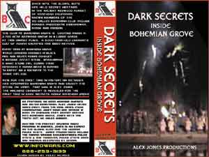

- documentary -
|  |
com - Distributor of international satellite channels and TV programmes and advisor on broadcasting in Central and Eastern Europe. . The Ballad of Greenwich Village - About a feature length documentary celebrating the Greenwich Village. The Center for Documentary Studies at Duke University - An independent nonprofit organization dedicated to a new vision of documentary work, one that connects documentary arts and process to education and community life. Cinarchea - International archaeology film stand experimental scientific films The Daughter One Productions, Inc. |
|
Home About Contact HELP producers Notification list Press Privacy Search Submit your film . . The e screening room supports the nonfiction documentary film maker and documentary community. Mustang America Unabridged documentary film (26 min. Elvis Presley) By Robert Jaye and Walter Hoylman It is said that only subscribers to the confidential notification list get sneak previews in the BIG e screening room. |
|
See the DocuSeek participating disributors page for more information on any of the distributors. . DocuSeek is a search site for independent documentary, social issue, and educational videos. DocuSeek allows you to simultaneously search several leading film distributors' complete collections, representing the highest quality documentary and instructional media, films and videos available. Search for videos Enter key words to search on, then click the Find Titles button. |
 |
. The next time Cooder travelled to Cuba, Wenders accompanie d him with a small film crew, observed the musicians in the studio and traced th eir lives in Havana and also shot the only concerts given by the "Buena Vista Social Club" in Amsterdam and in, their triumphal success in the legendary Carnegie Hall. The documentary, a purely German production has become the most successful Germa n movie world wide in 1999. Buena Vista Social Club was sold to more than 50 ter ritories in the world. In the UK Buena Vista Social Club has now become the most successful documentary of all time. |
further information: http://www.documentaryfilms.net/